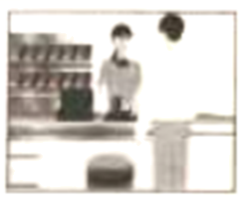

2023年北京中考英语 第12题 解析
12. —Lily, can you tell me ________ during the Dragon Boat Festival this year?
—Sure. We ate zongzi and watched a dragon boat race.
A. what you will doB. what you didC. what will you doD. what did you do
【答案】B
【解析】
【详解】句意：——莉莉，你能告诉我今年端午节你做了什么吗？——确定。我们吃了粽子，看了赛龙舟。
考查宾语从句。tell后缺少直接宾语，用宾语从句，宾语从句用陈述语序，排除CD；主现从不限，结合“We ate zongzi and watched a dragon boat race.”可知，从句用一般过去时，排除A。故选B。
二、完形填空 (每题1分, 共8分)
阅读下面的短文，掌握其大意，然后从短文后各题所给的A、B、C、D四个选项中，选择最佳选项。
Be What’s Missing
Where was that cashier (收银员)? Impatient, I quickly looked at my watch. I hardly had enough time to eat a sandwich and rush back to work.
I looked around the nearly empty ____13____, but the cashier was nowhere in sight. A woman stood wiping (擦) the far end of the counter. She looked at me coldly with sad, dark eyes.
I ____14____, getting angry. I’d been standing there for at least three minutes!
Controlling my anger, I remembered Mom’s words. “Whenever you find yourself in an unpleasant situation, just think about what is missing. If someone is unkind, then kindness is missing. If someone is hateful, then ____15____ is missing. If we will be what’s missing, then we’ll provide whatever the situation needs.”
And here I was in an unpleasant situation. How should I “be what’s missing”? What was missing was ____16____. Maybe I should just jump behind the counter and take my own order.
Just then the woman walked slowly towards me. “May I help you?” she asked, still ____17____. She looked so tired. No doubt, she was overworked.
I took a deep breath. With Mom’s words ringing in my head, I gave the woman my order ... and smiled. “How are you today?”
My question seemed to ____18____ her. She eyed me for a second before answering. “Not too good.”
“I’m sorry.” I said. “I hope it gets better starting right now.”
She almost smiled as she looked at me. “Thanks. I hope you’re right.”
I thought to myself as I ate my sandwich. We’re all the same, really. We have problems and angers, we get tired and we hurt. We need to be ____19____ to each other.
After eating, I wiped the table cleaner than usual, and put the tray (托盘) back nicely on the stand. The woman was watching me, a big smile on her face.
“Be what’s missing.” It ____20____.
